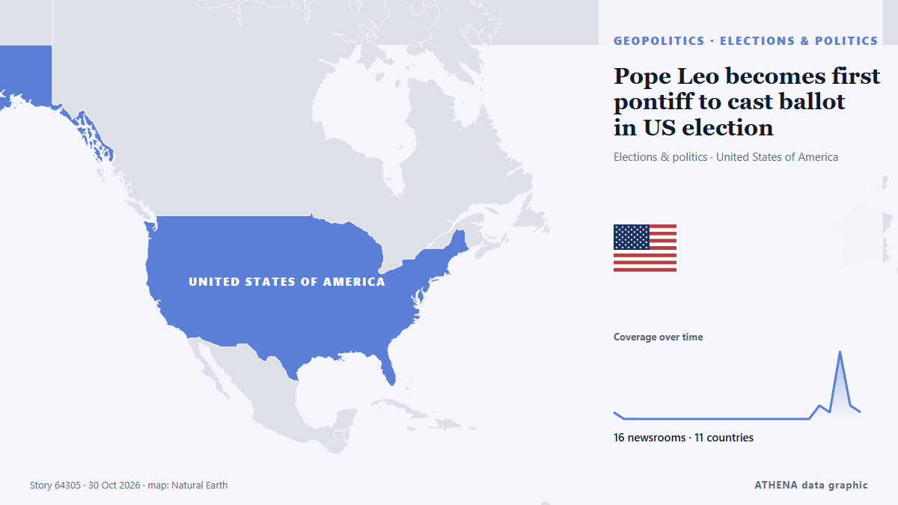

Pope Leo becomes first pontiff to cast ballot in US election

WASHINGTON, Oct 30 - Pope Leo XIV cast a ballot by mail in the US midterm elections, the Vatican press office said on Friday, a historic first for the American-born pontiff. de The Straits Times
Informado de forma independiente por 17 medios de 12 países desde el 27 oct; el primero fue The Art Newspaper; la cobertura va perdiendo fuerza. ATHENA califica el riesgo como moderado (3.3/10), sobre todo por la gravedad del daño descrito y su alcance geográfico y sectorial. La confianza es del 91 % (alta): lo corroboran 17 medios independientes, con una fiabilidad media de las fuentes del 76 %.
Por qué importa: Los hechos de seguridad y diplomacia pueden alterar alianzas, comercio y mercados mucho más allá de los países implicados.
Qué ha cambiado: 17 informaciones nuevas de 16 redacciones en las 24 horas hasta el 31 oct.
Primer titular: Pope Leo XIV requests mail-in ballot for US midterm elections
Los titulares se muestran en inglés, tal como se publicaron.
De un vistazo
Seleccionado, puntuado y redactado por la metodología publicada de ATHENA. Ningún editor interviene en eventos concretos. Cómo se elabora ›
| 27 Oct 18:50 UTC | 1 |
|---|---|
| 27 Oct 21:50 UTC | 0 |
| 28 Oct 00:50 UTC | 0 |
| 28 Oct 03:50 UTC | 0 |
| 28 Oct 06:50 UTC | 0 |
| 28 Oct 09:50 UTC | 0 |
| 28 Oct 12:50 UTC | 0 |
| 28 Oct 15:50 UTC | 0 |
| 28 Oct 18:50 UTC | 0 |
| 28 Oct 21:50 UTC | 0 |
| 29 Oct 00:50 UTC | 0 |
| 29 Oct 03:50 UTC | 0 |
| 29 Oct 06:50 UTC | 0 |
| 29 Oct 09:50 UTC | 0 |
| 29 Oct 12:50 UTC | 0 |
| 29 Oct 15:50 UTC | 0 |
| 29 Oct 18:50 UTC | 0 |
| 29 Oct 21:50 UTC | 0 |
| 30 Oct 00:50 UTC | 0 |
| 30 Oct 03:50 UTC | 0 |
| 30 Oct 06:50 UTC | 2 |
| 30 Oct 09:50 UTC | 1 |
| 30 Oct 12:50 UTC | 10 |
| 30 Oct 15:50 UTC | 2 |
| 30 Oct 18:50 UTC | 1 |
| 30 Oct 21:50 UTC | 0 |
| 31 Oct 00:50 UTC | 1 |
| 30 Oct 07:29 UTC | 0.0 |
|---|---|
| 30 Oct 12:58 UTC | 2.4 |
| 30 Oct 13:43 UTC | 4.7 |
| 31 Oct 01:31 UTC | 3.3 |
Por qué estas cifras
Importancia
Riesgo
Confianza
La cobertura: quién informó y cuándo
titular tal como se publicó · abre el original- The Art Newspaper · Reino Unido · United KingdomComment | An open letter to Pope Leo XIV in defence of AI-generated art
- AzerNews · Azerbaiyán · AzerbaijanPope Leo XIV requests mail-in ballot for US midterm elections
- Andina (English) · Perú · PeruInca fortress of Sacsayhuaman will host 75,000 people to meet Pope Leo XIV in Cusco
- The Independent · Reino Unido · United KingdomLeo becomes first Pope to vote in US election after submitting his mail-in ballot
- Channels TV · NigeriaPope Leo XIV Voted In US Midterm Elections—Vatican
- The Straits Times · Singapur · SingaporePope Leo casts US midterm ballot after row with Trump
- Buenos Aires Herald · ArgentinaPope Leo XIV expected to bring a potential economic impact of over US$500 million
- Punch · NigeriaPope votes in US midterm elections, Vatican confirms
- BBC News · Reino Unido · United KingdomPope Leo XIV becomes first pontiff to vote in a US election
- The Straits Times · Singapur · SingaporePope Leo becomes first pontiff to cast ballot in US election
- Cyprus Mail · Chipre · CyprusPope Leo becomes first pontiff to cast ballot in US election
- The Hill · Estados Unidos · United StatesLeo XIV becomes first pope ever to vote in US general election
- Vanguard · NigeriaPope Leo makes history with US midterm vote
- Anadolu Agency (English) · Turquía · TurkeyIn first for papacy, Pope Leo XIV casts ballot in US midterm elections
- APA (English) · Azerbaiyán · AzerbaijanPope Leo becomes first pontiff to cast ballot in US election
- MercoPress · UruguayLeo XIV becomes the first pope to vote in a US election
- SABC News · Sudáfrica · South AfricaPope Leo becomes first pontiff to cast ballot in US election
- Al Jazeera English · Catar · QatarPope Leo becomes first pontiff to vote in US general election